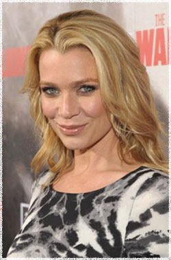

Лори Холден
 Андреа (актриса Лори Холден) - клерк юридической фирмы. Она везла свою младшую сестру Эми в колледж перед тем как наступила эпидемия. Впоследствии они присоеденились к группе выживших на границе Атланты. В лагере её ролью был уход за детьми.
Лори Холден (Laurie Holden) - американская актриса, родилась 17 декабря 1972 года в США в Лос-Анджелесе штат Калифорния.
Сериал Ходячие мертвецы это третья совместная работа Лори Холден с режиссёром Фрэнком Дарабонтом, она работала с ним ранее, исполнив главные женские роли в фильмах Majestic (Мажестик) и Mist (Мгла) Стивена Кинга.
Холден сыграла свою первую роль в сериале Martian Chronicles (Марсианские хроники) Рэя Бредбери под руководством режиссёра Майкла Андерсона. После окончания Калифорнийского университета, Лори была принята в National Honor Society и получила награду Natalie Wood за лучшую женскую роль. Она продолжила обучаться в Академии Искусств Уэбера Дугласа и оттачивала своё мастерство под руководством Ларри Мосса в его собственной студии.
Входит в топ-100 самых творческих людей Голливуда. Помимо актёрской деятельности Лори Холден активно участвует в производстве кино, телевизионных проектах и театраьных постановках.
Лори постоянно снимется в оригинальных фильмах на каналах HBO и Showtime. У неё большое количество эпизодических ролей на телевидении, среди которых стоит отметить роль в сериале Due South (Строго на юг), за которую она была номинирована на премию Canadian Gemini Award. Среди её ролей такие хиты как: Фантастическая Четверка и роль Сибил Беннет в экранизации видеоигры Silent Hill. Она получила известность сыграв роль Мариты Коваррубиас, информатора Фокса Малдера в культовом сериале Секретные материалы и за созданный ею образ агента Оливии Мюррей в сериале Щит.
Наиболее известна по фильмам:
Мажестик (Majestic)
Мгла (Mist)
Сайлент Хилл (Silent Hill)
Ходячие мертвецы (The Walking Dead)